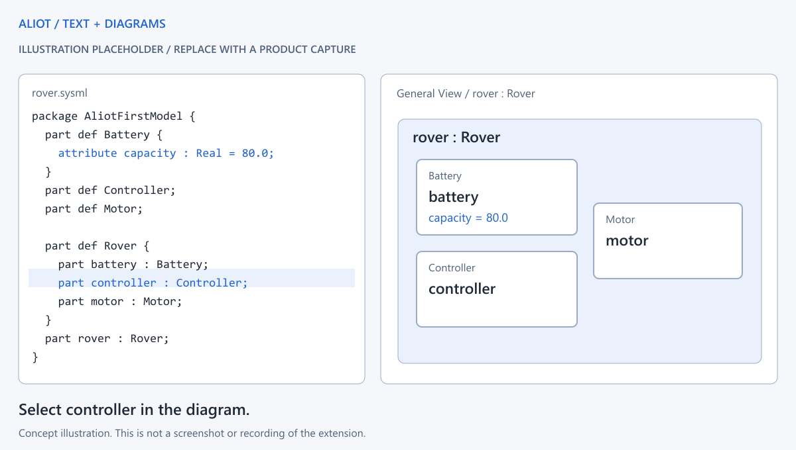
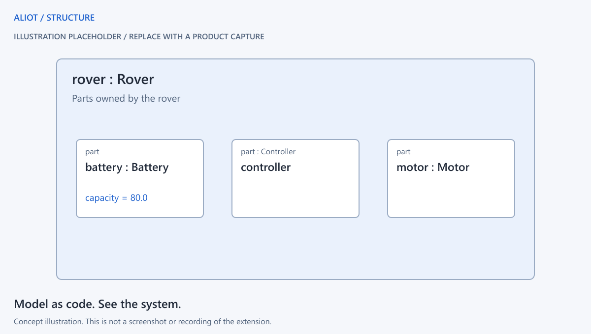
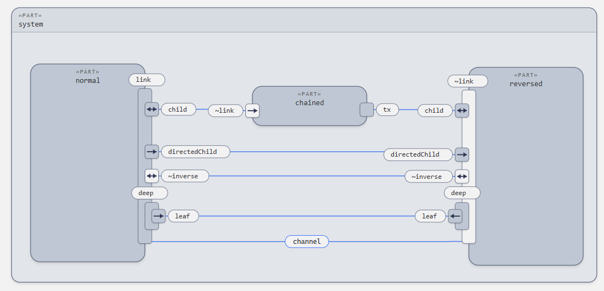

Write with context.
Completion, hover, navigation, rename and diagnostics for SysML v2 and KerML. Standard-library definitions are already at hand.
SYSML v2 + KerML. INSIDE VS CODE.
Move between text and diagrams without losing the model.
Build your system in the development environment you already use.
Local model processing · Bundled OMG library · Git-friendly files

ONE MODEL. TWO WAYS TO WORK.
Write, inspect and change your model.
Keep the structure in view as it grows.
Completion, hover, navigation, rename and diagnostics for SysML v2 and KerML. Standard-library definitions are already at hand.
Add elements, change names and values, and create relationships through supported diagram views. Semantic edits update your source.
Keep text and diagram layouts in Git. Validate and export in CI. Optional tools give compatible VS Code AI agents model context.
TEXT + DIAGRAMS
Rename a part in the diagram. Inspect the source.
Adjust a value and keep
working in either view.

CHOOSE YOUR PERSPECTIVE
Structure, connections, behavior and requirements.
Read the diagram guide →


Also explore Action Flow, State Transition, Sequence, Case, Geometry and Grid, with Browser navigation alongside your diagrams.
START SMALL. GO FURTHER.
Use a small example to learn the workflow.
Then explore a larger architecture.
Three parts, one value and a source file you can read in a minute.
Download the model ↓ CONNECTIONSExplore parts, ports, connections and behavior in a compact system.
Open the sample ↗ ARCHITECTURENavigate a larger system with interfaces and requirements.
Open the sample ↗SysML: New Model….
SysML: Show Diagram. Explore, edit and
save.
BEFORE YOU START
No. Aliot includes its language service and the OMG standard library. You do not need Java or PlantUML.
Language services and editable diagrams work in vscode.dev and github.dev. Archive and abstract-syntax interchange operations, and the companion CLIs, require a desktop environment.
No. AI tools are optional and need a compatible, separately configured VS Code agent. Aliot includes no AI model or credentials. A chosen agent service handles shared context under its own policies.
Your .sysml and .kerml files stay in the workspace. Diagram layouts live under .vscode/sysml/diagrams/. Aliot collects no telemetry. You choose what to share or commit.
Choose Aliot Dark for a dark editor, or SysML v2 Gray for a light gray editor. Diagrams also follow your active VS Code theme.
Aliot is available under its Freeware License. Bundled libraries retain their upstream licenses. The project is under active development; small reproductions make useful bug reports.
Start with a model. Keep it close to your code.